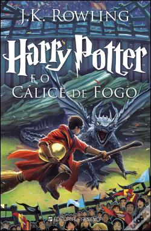

Nesta aventura, o feiticeiro cresceu e está com 14 anos. O início do ano letivo de Harry Potter reserva muitas emoções, mágicas, e acontecimentos inesperados, além de um novo torneio em que os alunos de Hogwarts terão de demonstrar todas as habilidade mágicas e não-mágicas que vêm adquirindo ao longo de suas vidas. Harry é escolhido pelo Cálice de Fogo para competir como um dos campeões de Hogwarts, tendo ao lado seus fiéis amigos. Muitos desafios, feitiços, poções e confusões estão reservados para Harry. Além disso, ele terá que lidar ainda com os problemas comuns da adolescência - amor, amizade, aceitação e rejeição.